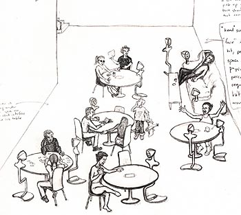

|

Chit Chat Club brings the online visitors into the public physical space of the cafe. It does this by both providing them with a view of the cafe and by giving them a physical presence with it.
Tables in the cafe will have regular chairs around them. Several tables will also have Avatar Chairs. These are human scale figures that can be inhabited by an online visitor. Each Avatar Chair has a camera and microphone for providing the visitor with a multimodal view of the cafe; speakers and a text display area for the visitor to communicate with the local patrons. Some of the Chairs are also equiped with remote controlled motors to allow the visitor to control the Avatars point of view. Cafes are social spaces - they are places where people come to converse, to meet friends, to people watch. It is a physical space, rich with the smell of coffee and the sound of chatter, a navigable place that people must negotiate to find good seats, to see and be seen. The cafe is local, fixed in space and reflecting and defining the social structure of the neighborhood.
The online world is also social, but far less physical. Its inhabitants have no bodies, its borders are porous. It is global rather than local. Yet there is a different kind of depth that exists in the online world, a depth of persistence, of vast collections of data, of conversations that remain permanently archived, unlike the ephemera of the spoken word.
"Chit Chat Club" is an experiment in bringing together the cafe and the online world.
Conversing online while in a cafe is not of course a novel idea. Many cafes today feature wireless access, and patrons read blogs, write email, instant message, etc. Yet this arrangement moves the patron's attention from the public and physical space of the cafe to the private world of these typed interactions.
Chit Chat Club brings the online visitors into the public physical space of the cafe. It does this by both providing them with a view of the cafe and by giving them a physical presence with it.
Tables in the cafe will have regular chairs around them. Several tables will also have Avatar Chairs. These are human scale figures that can be
inhabited by an online visitor. Each Avatar Chair has a camera and microphone for providing the visitor with a multimodal view of the cafe;
speakers and a text display area for the visitor to communicate with the local patrons. Some of the Chairs are also equiped with remote controlled motors to allow the visitor to control the Avatars point of view.
* Visitor remote interface: visitors will need a computer with a high speed net connection; a microphone is optional. The visitors will be able to receieve live video and audio from the cafe, from the point of view of the Chair they have chosen to "sit" in. They will also have a text entry interface where they can fill in information about themselves to create the "body" of the Avatar. They can communicate with the people at their table either via voice (if they have a microphone) or text. They have an interface for modifying the facial expression of the Avatar if they want to manually supplement the automatic expressions driven by the voice/text input.
* Avatar Chair Display: In the Cafe, each Avatar Chair has a face and body with projected images. Each Chair has a camera and microphone for transmitting the sound and images of the table to the remote user; each has a speaker for transmitting the sound from the remote user. Some of the chairs are robotic, allowing the remote user to turn the chair to face different peopel at the table.
The body of the avatar displays words (and pictures) provided by the remote user. These are the equivalent of clothes - self-chosen expressions of the self. The face of the avatar is a very abstract facial representation. It can make several different expressions, each to varying degrees of strength and purity.
Links: http://smg.media.mit.edu/projects/ISEA2006/ChitChatClub/
|